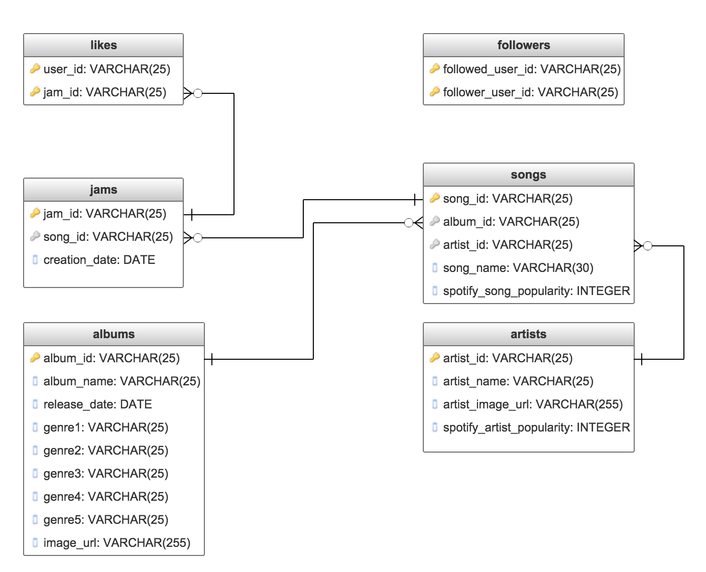
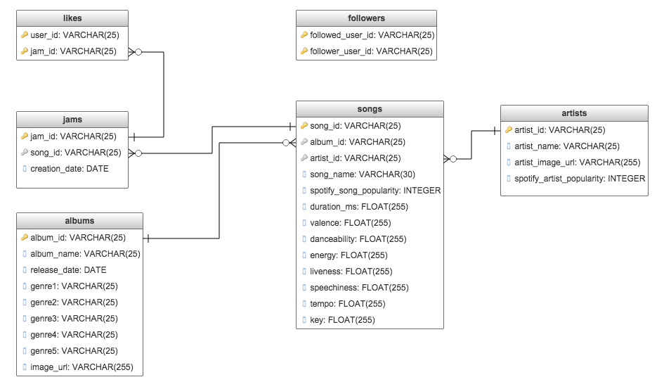

Post 1
For this project, we are looking to find trends in song popularity using data gathered from streaming music services. We want to see when popular songs begin to lose appeal after gaining traction. We will be creating a web application that visualizes a song’s rise in popularity over time and how quickly songs decay. We can then allow users to search by specific songs, artists, or genres.
Data
We are using Spotify's API in conjunction with a dataset from This Is My jam, which was a social media music web site that allowed users to post links to songs they liked listening to on their profiles. These posts are called 'jams'. The dataset from This Is My Jam contains information pertaining to the song tied to a user's jam, including the song name, artist, link to the song, and the song's URI for Spotify's API. The dataset also included when the jam was posted, who it was posted by, how many users liked the post, and the number of followers a user has.
Progress
In the past week, we created our database of song and jam information. We started with the This Is My Jam dataset, and cleaned the data to only include songs tied to a Spotify URI, which gave us approximately 1.5 million songs to work with. From there, we extracted more information about each song using Spotify's API. The information we gathered includes the song's genres, album information (including name and release date), and artist information. We also grabbed the Spotify's popularity metric for both the song and the artist, which we will later use in conjunction with the This Is My Jam number of likes metric to have a more accurate calculation of a song's popularity trend.
An ER diagram representing our database schema can be found below.

Challenges
We had some difficulty grabbing song information using Spotify's API. The main issue came from working around Spotify's rate limit for requests. For every song in our database, we needed to make a request to Spotify's API for more data. Unfortunately, their track endpoint only contained basic information for the song's album and artist (excluded genre for the album, release dates, popularity metrics, etc.) We then had to make two additional requests per song to get more information about the album and artist related to the song. To work around Spotify's API rate limiting, we added delays per request, which made the process of gathering data for all 1.5 millions songs take over several hours to complete.
Looking Forward
We plan on modifying our database to include audio features for each song. Spotify's API contains additional information for a song, including metrics suchs as 'danceability', 'energy', 'liveness', etc., and this information could be used in calculating a song's popularit trend. An updated ER diagram representing our new database schema can be found below.

Our next step is to create our Web App using D3 to visualize our data. This way, we can see trends develop.